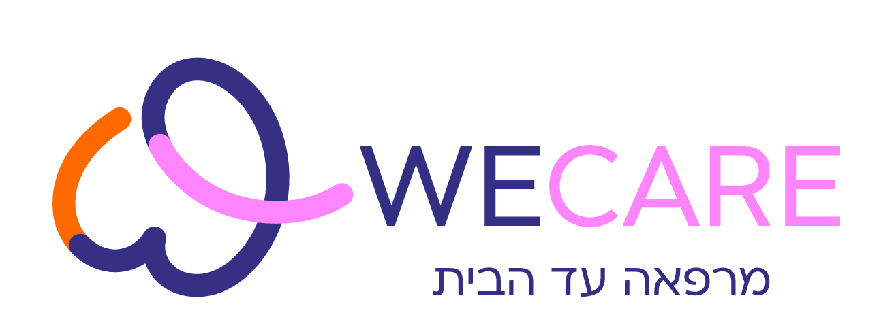
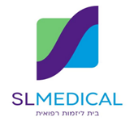
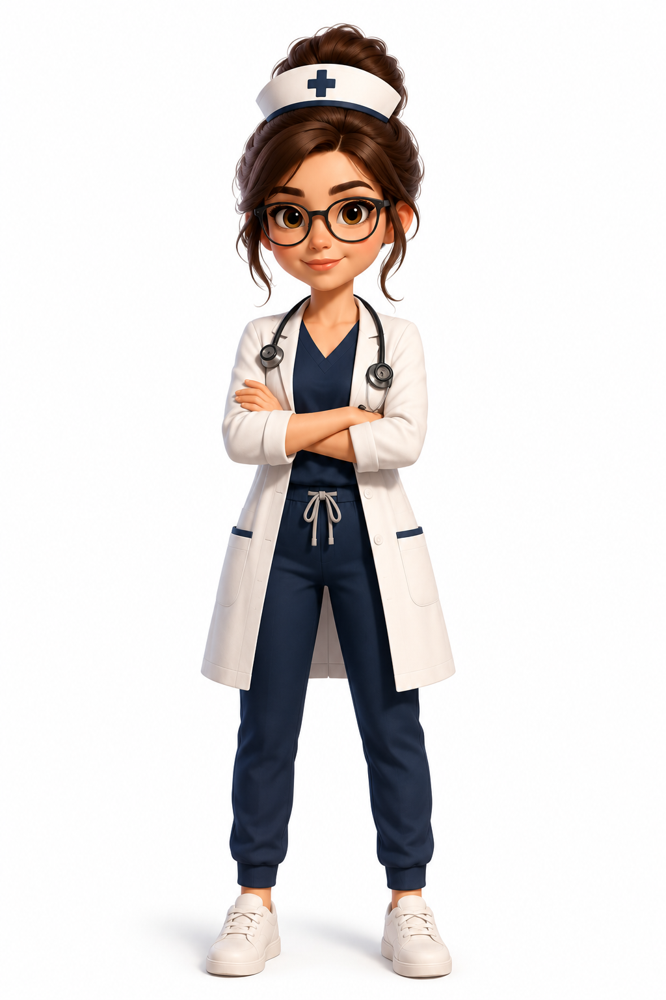

ענת מנור מסל · סמנכ״לית שיווק ופיתוח עסקי, סל מדיקל — בית ליזמות רפואית.
סטנדרטים רפואיים מוקפדים ורמה גבוהה לאורך כל מסע השירות.
מענה רפואי בכל אזורי הארץ — מרכז, צפון ודרום, על פי דרישת הלקוח המוסדי.
צוות עם ניסיון עמוק, שמדבר בשפה ובקודים של כל מטופל.
מי אני
אחרי למעלה מ-18 שנה בניהול מרכז רפואי ובהובלת שירותים רפואיים, אני מובילה היום את הפיתוח של שירותי רפואה חדשים — מקצה לקצה, משלב האפיון, דרך בניית התהליכים, ועד ההפעלה בפועל.
אני מאמינה ששירות רפואי מצוין נמדד לא רק באיכות המקצועית, אלא גם בחוויית המטופל. תחושת הביטחון, הזמינות, האמינות והאנושיות הן הדרך שבה המטופל זוכר את המפגש עם השירות — גם כאשר הלקוח הוא גוף מוסדי. נקודת המוצא תמיד נשארת המטופל.
הכירו את פלורנס
זו פלורנס — עוזרת ה-AI האישית שבניתי לעצמי. בניתי אותה כי אני מאמינה במה שאני מפתחת: שירות טוב מתחיל בלעבוד חכם.
פלורנס היא שותפה שמכירה אותי, חושבת איתי, עניינית וישירה — בדיוק כמוני.

בואו נדבר
גופים מוסדיים, ארגוני בריאות ושותפים פוטנציאליים — בואו נדבר על שיתוף פעולה.
צור קשר anat@sl-medical.co.il